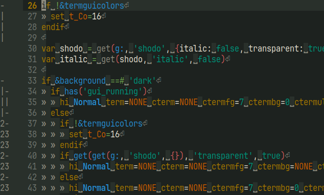

- WASHI
- traditional Japanese paper (light background)
- AOZUMI
- SHODO's ink (light foreground)
- Ash
- light sub foreground
- INKSTONE
- SHODO's inkstone (dark background)
- Fog
- soft paper-like light (dark foreground)
- Gray
- dark sub foreground
- When switching between light and dark modes, only the base color changes; other colors remain unchanged.
- Support both light/dark mode.

set background=light  set background=dark
- Because it became difficult to read when wide character are used.
To use italic:let g:shodo = #{italic: v:true, transparent: v:true}
- To use the transparency effect, you need to
- use enable transparency terminal
- set background color.
highlight Normal ctermbg=NONE guibg=NONE - To disable transparency:
let g:shodo = #{italic: v:false, transparent: v:false}